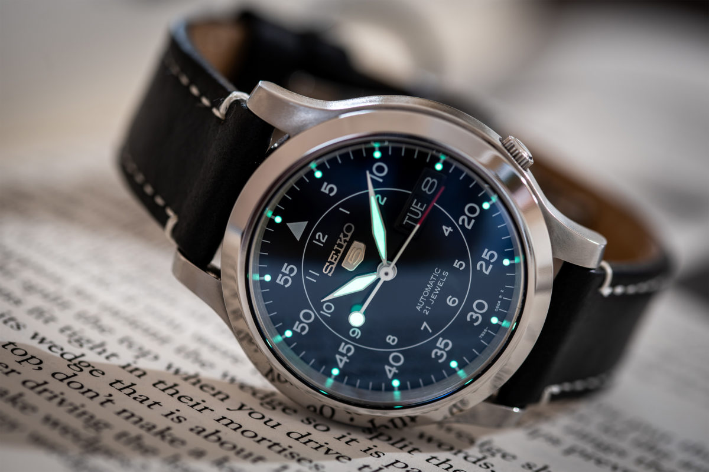

History
Back in the early 60's, Seiko set out to design an affordable
automatic. So the management and design team probably met up in a
cigarette smoke-filled conference room with slightly stale snacks in
one corner and spelled out the 5 pillars they'd create their new
watch around: an automatic mechanism, decent water resistance, day/
date complication, crown at 4 o'clock, and a durable case & strap.
And the Seiko 5 watch was born!
Movement
The 7S26 automatic winding movement combines simplicity with
reliability. It's fitted with 21 jewels and beats at 21,600bph. With
a standard deviation of -20/ +40 seconds a day, the 7S26 isn't the
most accurate of movements but is pretty reasonable for its' price
point.
Like all automatics, the SNK809 requires regular wear for it to keep
going, and has a power reserve of about 40 hours. But even with
constant wear, you'll have to reset the time every couple of days to
account for the deviation.
Crystal

Seiko has used Hardlex, designed in-house, to cover the dial. Apart
from sounding like a rap rock band from the early 2000's, Hardlex
offers great scratch resistance and will keep things nice and clear
much better than regular mineral crystal.
It doesn't come anything close to sapphire in terms of keeping
scratches at bay, but manages to get the job done quite commendably.
Dial
It has a black dial with white printed Arabic numbers marking the hours on the inner circle and minutes on the outer circle.
You'll find the day/ date complication at 3 o'clock, which can either be set in English or Spanish. The dial is pretty much a flat affair with the exception of the 5-minute marker bumps on the outer circle and the immediately recognizable Seiko 5 logo.
Night time visibility on this Seiko never really gets as much credit as it should; it's pretty good!